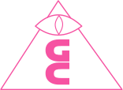

↓
Our Mission
→ Build open, neutral & autonomous protocol for liquidity
→ Become the solution that enables global finance of 21st century
MULTI-ASSET LIQUIDITY POOL
Our unique solution enables putting all assets into one shared liquidity pool – unlocking unparalleled efficiency.POWERED BY HDX
Native reserve token improving security and aligning incentives of key network participants. The total supply of HDX is a function of liquidity provisioned.INTEROPERABILITY
HydraDX is designed to communicate with other networks. Ethereum based assets will be ultimately liquid on HydraDX.COMMUNITY DRIVEN
HydraDX is an open and permissionless protocol governed by its community of users, liquidity providers and validators.NATIVE LIQUIDITY FOR POLKADOT ECOSYSTEM
HydraDX is a natural swap solution for all assets built on Substrate and in the fast-growing Polkadot ecosystem – a place to bootstrap liquidity.Why HydraDX
In the old financial world, liquidity is fragmented among many
gatekeepers, protecting their business interests, profiting from the
upside, while socializing the downside. The cost of liquidity is also high
because legacy technology consists of siloed databases.
Blockchain is changing this unfortunate reality by providing an open and
universally accessible technology layer for transaction settlement and
asset exchange.
However, the dominant blockchain application platform – Ethereum – suffers from being a general platform for many varied use cases – the network is getting clogged and fees are high.
However, the dominant blockchain application platform – Ethereum – suffers from being a general platform for many varied use cases – the network is getting clogged and fees are high.
In order to achieve the optimal properties, HydraDX is built as a
parachain – specialized blockchain in the Polkadot network. It is
benefiting from shared security, speed and flexibility of the Substrate
framework while remaining optimized for a single purpose: enabling fluid
programmable value exchange.
Thanks to planned interoperability between Polkadot and Ethereum ecosystems, Hydra will tap into Ethereum’s liquidity, talent and community, merging the best of the both worlds.
Thanks to planned interoperability between Polkadot and Ethereum ecosystems, Hydra will tap into Ethereum’s liquidity, talent and community, merging the best of the both worlds.
ABOUT THE TEAM
Hydra DX is developed by Galactic Council – Substrate oriented dev house building indy & cool stuff, with the goal of improving the Universe.